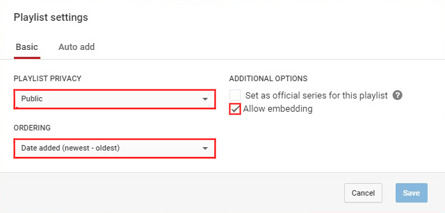
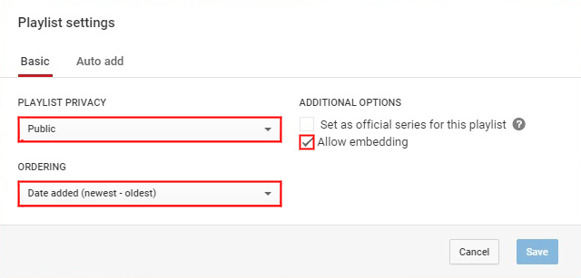

Want your own playlist on here, so you can share it with your friends and listen to it? Simply follow these few steps and you'll have your own playlist on here in no time! You can edit your playlist at any time from YouTube, remove and/or add videos when ever you feel the need.
Step 1) After creating your playlist & adding some songs to it... Go to your playlist page on YouTube & click "Playlist settings".

Step 2) Make sure your playlist has these settings set, otherwise the playlist will not work properly. Set the "PLAYLIST PRIVACY" option to "Public". Set the "ORDERING" option to "Date added (newest - oldest)". In "ADDITIONAL OPTIONS", tick the "Allow embedding" option. Then click "Save".

Step 3) Head to my contact page and send me a message with your playlist link in it, saying you wish for a custom playlist. Make sure to include the following information; Playlist URL & your email address.
Step 1) After creating your playlist & adding some songs to it... Go to your playlist page on YouTube & click "Playlist settings".
Step 2) Make sure your playlist has these settings set, otherwise the playlist will not work properly. Set the "PLAYLIST PRIVACY" option to "Public". Set the "ORDERING" option to "Date added (newest - oldest)". In "ADDITIONAL OPTIONS", tick the "Allow embedding" option. Then click "Save".

Step 3) Head to my contact page and send me a message with your playlist link in it, saying you wish for a custom playlist. Make sure to include the following information; Playlist URL & your email address.